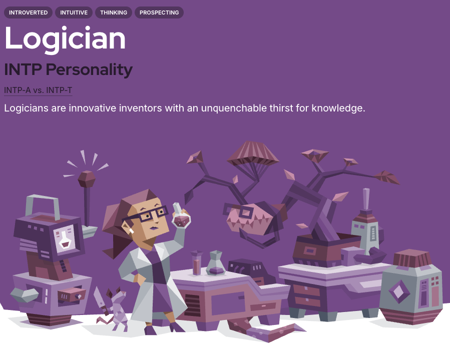
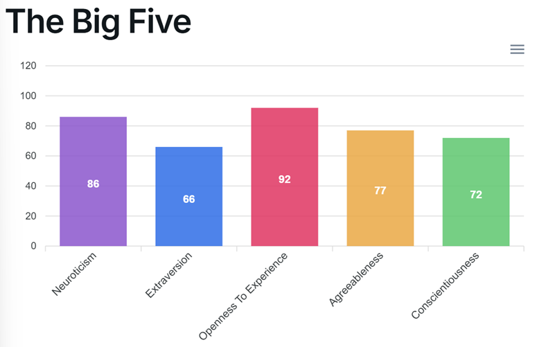
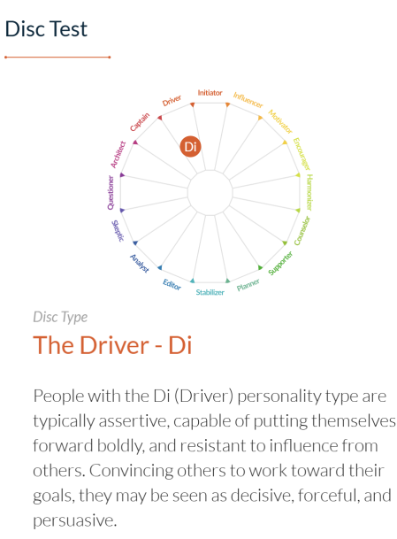

3 My Shape
(Piagam Diri dan Identitas Naratif Pribadi)
LAPORAN MY SHAPE
(Piagam Diri dan Identitas Naratif Pribadi)
Nama: Winata Tristan
NIM: 18222061
Program Studi: Sistem dan Teknologi Informasi – STEI ITB
Dosen Pengampu: Dr. Armein Z. R. Langi
Tanggal: 13 Oktober 2025
1. Pendahuluan
Di tengah dinamika zaman yang semakin cepat dan kompleks, kemampuan untuk memahami diri sendiri secara utuh menjadi salah satu kunci penting dalam mencapai keberhasilan pribadi maupun profesional. Banyak orang bisa unggul secara akademis atau teknis, tetapi belum tentu mampu menemukan arah, makna, dan kepuasan dalam perjalanan hidupnya. Sering kali hal ini bukan karena kurangnya kemampuan, melainkan karena kurangnya pemahaman tentang siapa dirinya sebenarnya—apa nilai yang ia pegang, serta bagaimana kekuatan dan pengalaman hidupnya dapat digunakan untuk memberi dampak nyata.
Kerangka My SHAPE, yang dikembangkan oleh Dr. Armein Z. R. Langi berdasarkan adaptasi dari konsep Rick Warren, menawarkan pendekatan reflektif untuk membantu individu mengenal dirinya secara lebih mendalam. SHAPE merupakan singkatan dari lima dimensi utama pembentuk identitas: Signature Strengths, Heart, Aptitudes & Acquired Skills, Personality, dan Experiences. Melalui pemetaan kelima aspek ini, seseorang dapat memahami bukan hanya apa yang ia lakukan, tetapi juga mengapa dan bagaimana ia melakukannya.
Laporan ini disusun sebagai bentuk penerapan konsep tersebut dalam konteks pengembangan diri mahasiswa. Melalui proses asesmen, refleksi, dan sintesis naratif, saya mencoba menyusun Piagam Diri (Personal Charter)—sebuah dokumen singkat yang menggambarkan kekuatan, nilai, keterampilan, kepribadian, serta pengalaman hidup saya—dan merumuskannya menjadi identitas naratif yang lebih koheren dan autentik.
Lebih dari sekadar mengenali potensi pribadi, laporan ini juga bertujuan untuk menumbuhkan kesadaran reflektif yang dapat menjadi dasar dalam pengambilan keputusan karier, pengembangan kepemimpinan, dan perencanaan hidup ke depan. Dengan demikian, laporan ini tidak hanya berfungsi sebagai tugas akademik, tetapi juga sebagai sarana untuk meneguhkan arah hidup dan menemukan versi terbaik dari diri saya sendiri.
2. Misi Pribadi
Misi pribadi adalah untuk berusaha setiap harinya untuk “Seize The Day.”
Berupaya setiap harinya untuk berusaha sebaik mungkin untuk mencapai tujuan saya, namun juga menjadi pribadi yang lebih baik, tanpa kehilangan jati diri, kreativitas, serta ketakjuban dan rasa penasaran terhadap dunia ini.
3. Hasil Asesmen Diri Berdasarkan My SHAPE
3.1 S – Signature Strengths (Kekuatan Khas)
Hasil asesmen menunjukkan bahwa kekuatan khas saya mencerminkan kemampuan berpikir reflektif, mandiri, dan adaptif terhadap perubahan. Enam kekuatan utama saya meliputi:
- Novel Perspectives (Sudut Pandang Baru): melihat masalah dari sisi tidak biasa dan mampu menemukan solusi kreatif di luar kerangka berpikir tradisional.
- Quick to See Patterns (Cepat Melihat Pola): mudah mengenali hubungan tersembunyi antar-ide, menemukan koneksi yang luput dari perhatian orang lain.
- Driven by Curiosity (Didorong oleh Rasa Ingin Tahu): dorongan alami untuk terus belajar dan memperluas wawasan.
- Adaptability (Kemampuan Beradaptasi): tenang menghadapi perubahan, tetap fokus.
- Independent & Self-Directed (Mandiri & Terarah): mampu mengatur waktu dan prioritas tanpa pengawasan terus-menerus.
- Truth-Focused (Berorientasi pada Kebenaran): keputusan berbasis fakta dan analisis rasional.
Kombinasi kekuatan ini menggambarkan individu reflektif, analitis, dan fleksibel—seseorang yang belajar cepat, berpikir logis, dan mampu beradaptasi dalam lingkungan dinamis.
3.2 H – Heart (Hati: Nilai dan Gairah)
Nilai-nilai inti yang saya junjung tinggi: Kebebasan (Freedom), Kreativitas (Creativity), dan Petualangan (Adventure).
Ketiganya menjadi kompas yang menuntun cara saya berpikir, bekerja, dan mengambil keputusan.
- Kebebasan: hidup dan berpikir mandiri, bertanggung jawab atas pilihan.
- Kreativitas: menikmati proses menemukan ide baru dan menciptakan hal unik.
- Petualangan: dorongan keluar dari zona nyaman; setiap tantangan = peluang tumbuh.
Nilai-nilai ini membuat saya tertarik pada proyek dan lingkungan yang memberi ruang untuk eksplorasi ide, inovasi, dan kebebasan berpikir. Saya cenderung terinspirasi oleh situasi yang dinamis dan penuh kemungkinan, di mana saya dapat menyalurkan rasa ingin tahu dan semangat belajar saya secara otentik.
Selain itu, saya menyadari bahwa hal yang paling mendorong dan memberi saya energi adalah kebebasan untuk mencipta dan mengeksplorasi hal baru. Saya memperoleh motivasi ketika dapat berpikir di luar pola umum, belajar secara mandiri, dan mengubah ide menjadi sesuatu yang nyata. Saya juga merasa hidup ketika menghadapi tantangan yang memaksa saya keluar dari zona nyaman—selama saya tetap memiliki ruang untuk bereksperimen dan berkembang dengan cara saya sendiri.
3.3 A – Aptitudes & Acquired Skills (Bakat dan Keterampilan)
Bakat alami saya terletak pada penalaran analitis dan pemahaman pola, sangat membantu memahami struktur sistem dan logika teknologi. Saya cepat menangkap konsep kompleks dan menghubungkannya menjadi solusi efisien.
Keterampilan saya berkembang melalui proyek dan pembelajaran mandiri, terutama di bidang web development.
Hard Skills:
- Analisis data (Python, SQL) & visualisasi dasar.
- Web dev (HTML/CSS/JS, React, Next.js, Tailwind CSS).
- Backend sederhana (FastAPI/Express.js) & integrasi RESTful API.
Soft Skills:
- Komunikasi & presentasi terstruktur.
- Adaptasi cepat terhadap lingkungan baru.
- Kolaborasi lintas tim dan manajemen waktu.
Keterampilan teknis ini menjadi wadah ideal menyalurkan kreativitas sekaligus kekuatan analitis—mengubah ide menjadi produk digital fungsional dan bermakna.
3.4 P – Personality (Kepribadian)

MBTI : INTP-T (Logician) — analitis, reflektif, mandiri, inovatif; perfeksionis-turbulent.
Berdasarkan hasil asesmen Myers-Briggs Type Indicator (MBTI), tipe kepribadian saya adalah INTP-T (Introverted, Intuitive, Thinking, Perceiving – Turbulent Logician). Tipe ini sering digambarkan sebagai pemikir analitis yang tertarik mengeksplorasi ide-ide abstrak dan memahami sistem yang kompleks.
Ciri utama dari kepribadian INTP-T antara lain:
- Analitis dan Reflektif: senang menganalisis konsep dan menemukan pola tersembunyi.
- Independen dan Otonom: produktif ketika diberi kebebasan untuk bekerja dengan cara sendiri.
- Inovatif dan Ingin Tahu: menikmati proses menemukan solusi kreatif yang tidak konvensional.
- Perfeksionis dan Introspektif (Turbulent): sering meninjau ulang hasil kerja dan berusaha memperbaikinya terus-menerus.
Dalam konteks kerja dan pembelajaran, kepribadian ini membuat saya unggul dalam pemecahan masalah logis, pengembangan ide, dan perancangan sistem efisien. Namun, saya juga belajar untuk menyeimbangkan kecenderungan analitis dengan tindakan yang lebih konkret dan kemampuan berkolaborasi. Kombinasi antara pemikiran mendalam, fleksibilitas, dan refleksi diri membantu saya menyesuaikan diri dengan perubahan dan terus berkembang secara pribadi maupun profesional.

Big Five (IPIP-NEO): Openness 92, Neuroticism 86, Agreeableness 77, Conscientiousness 72, Extraversion 66.
Sebagai pelengkap, saya juga mengikuti Big Five Personality Test (IPIP-NEO) untuk melihat posisi saya pada lima dimensi utama kepribadian (OCEAN).Hasilnya menunjukkan profil: Openness 92, Neuroticism 86, Agreeableness 77, Conscientiousness 72, dan Extraversion 66.
Skor Openness yang sangat tinggi menegaskan rasa ingin tahu dan imajinasi luas, sementara Agreeableness dan Conscientiousness cukup tinggi menunjukkan kemampuan berempati dan bertanggung jawab. Neuroticism tinggi mencerminkan kepekaan emosional dan kesadaran diri kuat, sedangkan Extraversion moderat menandakan keseimbangan antara kebutuhan sosial dan waktu refleksi pribadi. Kombinasi ini memperkuat karakter saya sebagai individu analitis, kreatif, serta peka terhadap konteks emosional dan sosial di sekitar.

DISC : Di (Driver) — tegas, berorientasi hasil, berani inisiatif.
Selain itu, hasil DISC Assessment menempatkan saya pada tipe Di (Driver). Individu dengan tipe ini umumnya tegas, berorientasi hasil, dan berani mengambil inisiatif. Saya cenderung bergerak cepat dalam pengambilan keputusan dan mampu memengaruhi orang lain untuk mencapai tujuan bersama. Dalam konteks kerja, karakter Driver membantu saya tetap fokus, berani menghadapi risiko, dan berkomunikasi secara persuasif. Namun, saya juga belajar untuk menyeimbangkan ketegasan dengan empati agar kolaborasi tim berjalan harmonis.
Secara keseluruhan, ketiga hasil tes ini memberikan gambaran utuh tentang gaya kepribadian saya: seorang pemikir mandiri yang analitis, terbuka terhadap pengalaman baru, berorientasi hasil, namun tetap reflektif dan sadar emosi. Kombinasi ini membuat saya mampu beradaptasi di lingkungan dinamis, menggabungkan logika dan empati, serta memimpin dengan pendekatan yang rasional sekaligus manusiawi.
3.5 E – Experiences (Pengalaman Hidup)
Pengalaman 1 – Perjalanan dalam Kompetisi Tenis Meja
Saya pernah mengalami kekecewaan mendalam ketika kalah di kompetisi tenis meja tingkat kota yang sangat saya persiapkan. Kekalahan tersebut awalnya membuat saya merasa gagal dan mempertanyakan kemampuan diri sendiri. Namun, pengalaman itu justru menjadi titik balik—saya berlatih setiap hari dengan disiplin, memperbaiki teknik dan pola pikir, hingga akhirnya berhasil menjadi juara tingkat kota dan peringkat ketiga di tingkat provinsi. Dari pengalaman ini, saya belajar bahwa kegigihan dan pembelajaran berkelanjutan jauh lebih penting daripada hasil sesaat. Proses itu mengajarkan saya bahwa kegagalan bukanlah akhir, melainkan bagian dari perjalanan menuju perbaikan diri. Sikap ini juga selaras dengan kekuatan saya sebagai pribadi yang mandiri, reflektif, dan berorientasi pada pertumbuhan (growth mindset).
Pengalaman 2 – Kompetisi Tim di ITS
Saat SMA, saya dan tim mengikuti kompetisi sains dan teknologi yang diselenggarakan oleh ITS Surabaya. Prosesnya jauh dari mudah—tim kami mengalami kekacauan komunikasi, ide yang bertabrakan, serta tekanan waktu besar. Namun, melalui diskusi terbuka, saling percaya, dan pembagian peran yang jelas, kami akhirnya bisa menampilkan solusi terbaik dan meraih posisi runner-up (juara 2). Pengalaman ini memperkuat pemahaman saya tentang pentingnya kolaborasi, komunikasi, dan kepercayaan antar anggota tim. Saya belajar bahwa meskipun saya cenderung analitis dan mandiri (sesuai profil INTP-T dan Driver-Di), hasil terbaik sering muncul dari kerja sama dan kemampuan menyesuaikan diri dengan gaya berpikir orang lain.
Kesimpulan Pengalaman
Secara keseluruhan, kedua pengalaman ini menanamkan nilai-nilai penting dalam diri saya: ketekunan, tanggung jawab, kerja tim, dan komitmen terhadap pertumbuhan pribadi. Keduanya juga menjadi cerminan nyata dari keseimbangan antara sisi analitis dan humanis dalam kepribadian saya—bahwa logika dan kerja keras perlu berjalan beriringan dengan empati dan kolaborasi.